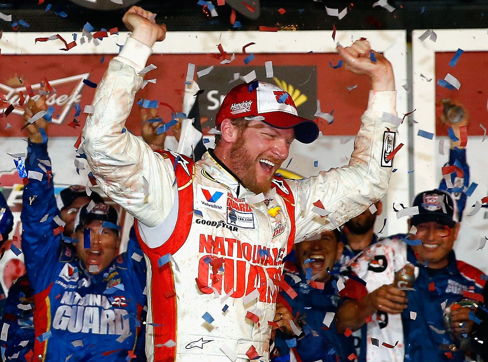

Dale Earnhardt Jr.
Nascar was one of the first sports I started following and ever since the beginning Dale Earnhardt Jr. has been my favorite driver. He is the son of the late great Dale Earnhardt Sr. and has won 26 races at the top level including 2 Daytona 500s. Of all the sports I've followed Dale Jr. is definitely one of the most beloved figures I've ever seen. Now that he has retired I've also enjoyed getting to see more of his personality through the commentary job he now has with Nascar as well as his podcast he hosts.